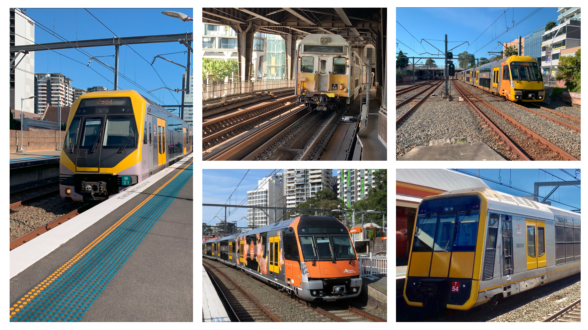

Current Sydney Train Fleet


- Class: K-set
- In Service: 1981-Present
- Manufacturer: A Goninan & CO
- Constructed: 1981-1985
- Number Built: 160 Carriges
- Number In Service: 160 Carriges
- Formation: 4 Car Sets
- Operator: Sydney Trains
-
Lines Served:

- Class: B-set
- In Service: 2018-Present
- Manufacturer: Downer Rail and CRRC
- Constructed: 2017-2021
- Number Built: 41 Sets
- Number In Service: 41 Sets
- Formation: 8 Car Sets
- Operator: Sydney Trains
-
Lines Served:

- Class: A-set
- In Service: 2011-Present
- Manufacturer: Downer Rail and CRRC
- Constructed: 2010-2014
- Number Built: 79.5 Sets
- Number In Service: 78 Sets
- Formation: 8 Car Sets
- Operator: Sydney Trains
-
Lines Served:

- Class: T-set
- In Service: 1988-Present
- Manufacturer: A Goninan & Co
- Constructed: 1987-1997
- Number Built: 455 Carriges
- Number In Service: 447 Cariges
- Formation: 4 Car Sets
- Operator: Sydney Trains
-
Lines Served:

- Class: M-set
- In Service: 2011-Present
- Manufacturer: EDi Rail
- Constructed: 2002-2005
- Number Built: 141 Carriges
- Number In Service: 140 Carriges
- Formation: 4 Car Sets
- Operator: Sydney Trains
-
Lines Served:

- Class: H-set
- In Service: 2006-Present
- Manufacturer: UGL Rail
- Constructed: 2006-2012
- Number Built: 221 Carriges
- Number In Service: 220 Carriges
- Formation: 4 Car Sets
- Operator: Sydney Trains (Peak Hour Only)
-
Lines Served (Peak Hour Only):